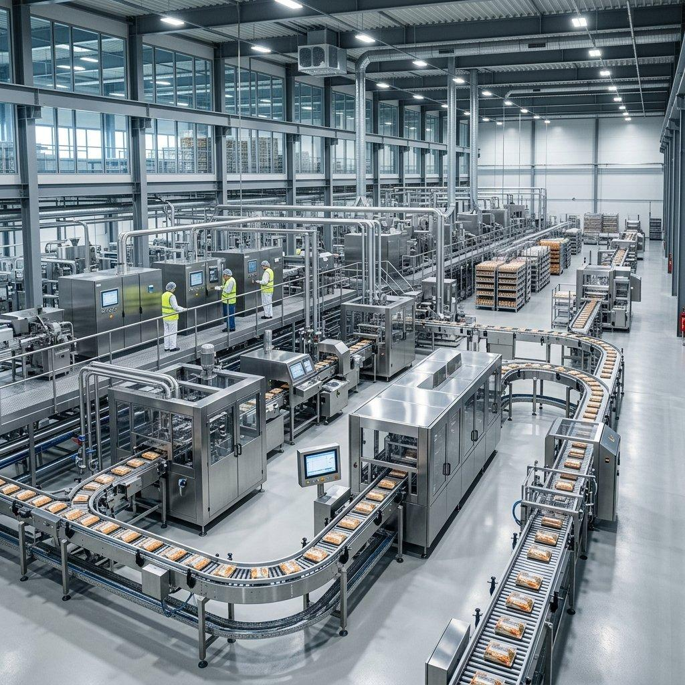
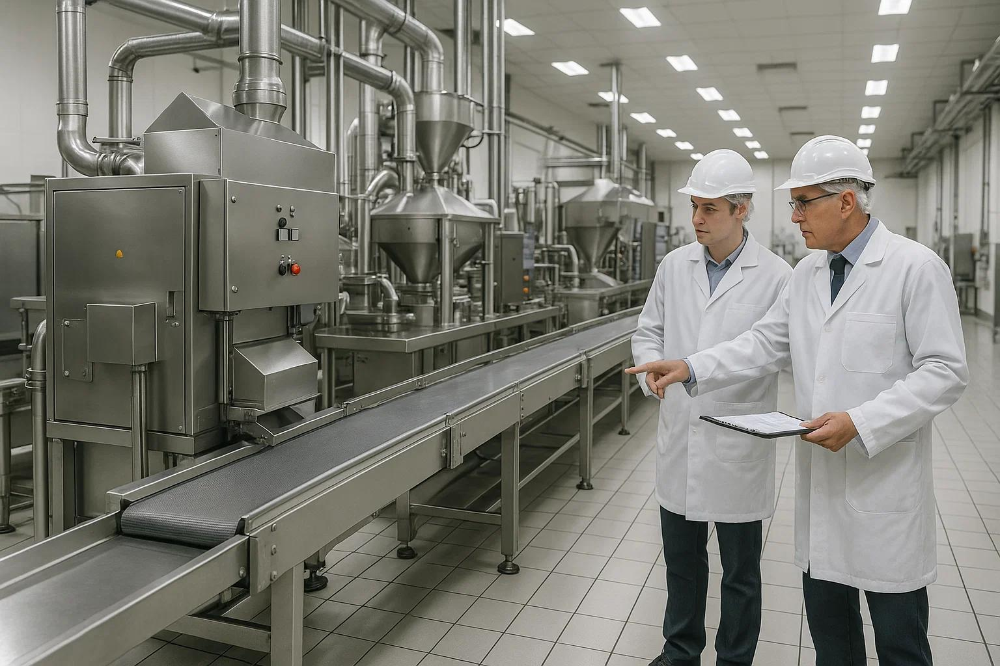
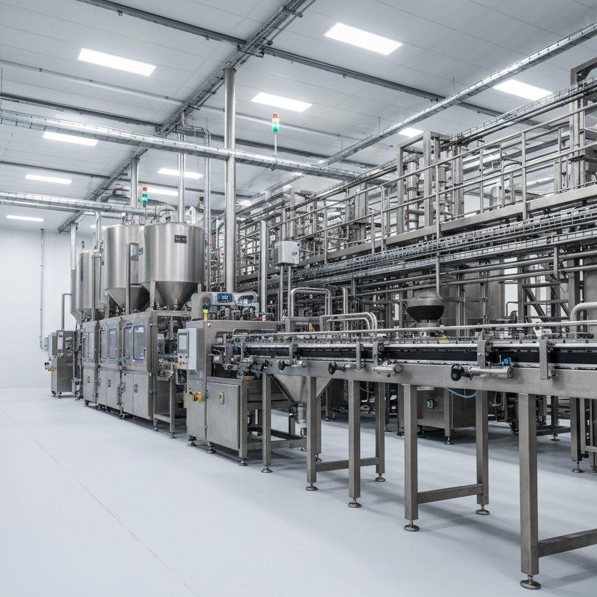
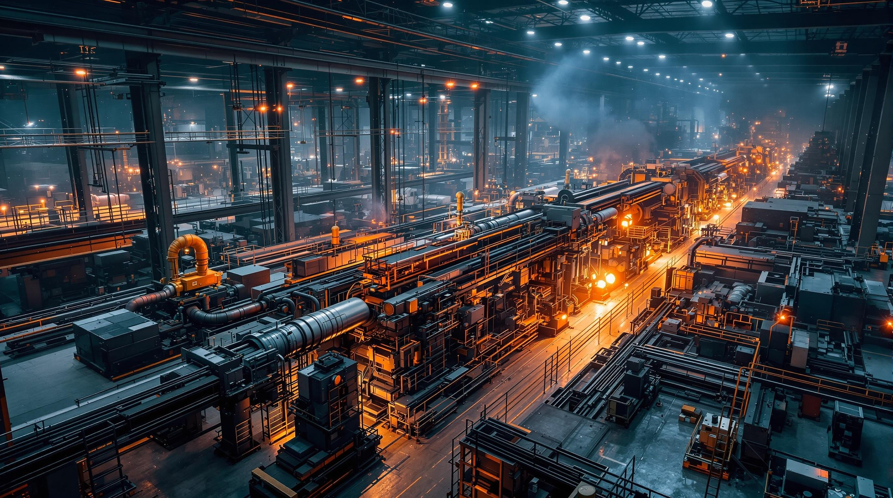

01
تصميم خطوط إنتاج
تصميم وتخطيط خطوط إنتاج الصناعات الغذائية بما يتناسب مع طبيعة المنتج ومتطلبات التشغيل.
PRODUCTION LINE DESIGNشركة السيف الدمشقي للتصميم الصناعي، شريككم في تصميم وصيانة وتطوير وتحديث خطوط إنتاج المواد الغذائية، مع استشارات فنية تساعدكم على تحسين الأداء ورفع كفاءة العمليات الإنتاجية.


شركة السيف الدمشقي للتصميم الصناعي Damascus Sword for Industrial Design متخصصة في تصميم خطوط الإنتاج وصيانتها وتطويرها، وتقديم الاستشارات الفنية المتعلقة بخطوط إنتاج المواد الغذائية، بهدف مساعدة المنشآت الصناعية على تحسين الأداء ورفع كفاءة التشغيل.
تتمثل رسالتنا في تقديم حلول صناعية وهندسية متخصصة في تصميم خطوط الإنتاج وصيانتها وتطويرها، مع توفير الاستشارات الفنية لخطوط إنتاج المواد الغذائية، بما يساعد المنشآت على تحسين كفاءة التشغيل وتلبية متطلباتها الإنتاجية.
نطمح إلى الإسهام في تطوير القطاع الصناعي من خلال تقديم حلول متخصصة في تصميم وتحديث خطوط الإنتاج، ومواكبة احتياجات الصناعات الغذائية، بما يدعم التطور التقني ويرتقي بمستوى الأداء والإنتاجية.
نحرص على أن تقوم أعمالنا على الدقة في التصميم، والجودة في التنفيذ، والالتزام بمتطلبات العملاء، إلى جانب الاهتمام بالتطوير المستمر وتقديم الاستشارات الفنية التي تساعد على الوصول إلى حلول مناسبة لكل مشروع.
في شركة السيف الدمشقي للتصميم الصناعي، نقدم حلولاً متخصصة لتصميم وصيانة وتطوير خطوط إنتاج المواد الغذائية، بما يدعم كفاءة التشغيل واستمرارية الإنتاج.

من تصميم خطوط الإنتاج إلى التطوير والصيانة والاستشارات الصناعية.
تواصل مع فريقناتصميم وتخطيط خطوط إنتاج الصناعات الغذائية بما يتناسب مع طبيعة المنتج ومتطلبات التشغيل.
PRODUCTION LINE DESIGNخدمات صيانة للمعدات وخطوط الإنتاج للمساعدة في تقليل الأعطال وتحسين استمرارية التشغيل.
PRODUCTION LINE MAINTENANCEتطوير وتحديث خطوط الإنتاج والمعدات القائمة لدعم الكفاءة التشغيلية ومواكبة احتياجات المصنع.
UPGRADING & MODERNIZATIONاستشارات متخصصة في كل ما يتعلق بخطوط إنتاج المواد الغذائية وتخطيط العمليات الصناعية.
FOOD PRODUCTION CONSULTINGلأن نجاح خطوط الإنتاج يبدأ بالتخطيط الصحيح، ويستمر بالصيانة الفعالة والتطوير المستمر. نقدم حلولاً صناعية مصممة لتلبية احتياجات مصانع الصناعات الغذائية.

نساعدك على تطوير عمليات الإنتاج من خلال التصميم والصيانة والاستشارات الصناعية.
تصميم وتطوير الحلول الصناعية وفق طبيعة المصنع ومتطلبات المنتج وأهداف التشغيل.
دعم تطوير خطوط الإنتاج وصيانة المعدات بهدف تحسين سير العمل والحد من الأعطال.
اهتمام متخصص بتحديات تصميم خطوط إنتاج المواد الغذائية وتطويرها وتحديثها.
مساعدتك في دراسة احتياجات الإنتاج واختيار الحلول المناسبة لمتطلبات مشروعك الصناعي.
تواصل معنا لمناقشة احتياجات مصنعك والحلول الصناعية المناسبة.
نتبع منهجية عمل منظمة تبدأ بفهم متطلبات مشروعك، ثم دراسة الحلول المناسبة وتخطيطها، وصولاً إلى التطوير والدعم بما يتوافق مع احتياجات الإنتاج.
نتعرف على طبيعة نشاطك الصناعي، ومتطلبات خط الإنتاج، والتحديات التي تحتاج إلى حلول عملية.
ندرس المتطلبات ونحدد التصور الفني المناسب لتصميم خطوط الإنتاج أو صيانتها أو تطويرها.
العمل على الحل المتفق عليه وفق نطاق المشروع، سواء كان تصميماً أو صيانة أو تحديثاً للمعدات.
تقديم الإرشادات الفنية ومناقشة فرص التحسين بما يدعم استمرارية العمل وتطور العمليات الصناعية.
نفهم اختلاف متطلبات التصنيع، ونعمل على دراسة طبيعة كل مشروع لتقديم حلول هندسية تتناسب مع احتياجات خطوط الإنتاج وأهداف التشغيل.
تصميم وتطوير خطوط إنتاج المنتجات الغذائية وفقاً لطبيعة المنتج ومتطلبات التصنيع والتشغيل.
اكتشف الحلول المناسبةدراسة مراحل التشغيل وتكامل المعدات للمساعدة في بناء منظومة إنتاج تتناسب مع متطلبات المنشأة.
اكتشف الحلول المناسبةدراسة حلول التعبئة والتغليف وتكاملها مع مراحل الإنتاج بما يخدم سير العمل ومتطلبات المنتج.
اكتشف الحلول المناسبةمن المفرق، الأردن، نبدأ بفهم احتياجات مشروعك الصناعي ودراسة الحلول الملائمة له.
استكشف نماذج من أعمالنا في تصميم وتطوير وصيانة خطوط الإنتاج والحلول الصناعية، بجودة تجمع بين الخبرة والدقة.


هل تبحث عن حل صناعي يناسب احتياجات مشروعك؟
ناقش مشروعك معناجمعنا لك أهم الأسئلة حول خدمات التصميم الصناعي، وصيانة خطوط الإنتاج، وتطوير الأنظمة الصناعية، لمساعدتك على اتخاذ القرار المناسب لمشروعك.
تواصل معنا لمناقشة احتياجاتك في تصميم خطوط الإنتاج وصيانتها وتطويرها، وسنعمل على مساعدتك في الوصول إلى الحل المناسب لمشروعك.
يمكنك الاتصال بنا أو مراسلتنا عبر واتساب على أي من الرقمين التاليين.
المفرق، المملكة الأردنية الهاشمية
املأ البيانات التالية وسنتابع معك عبر واتساب.